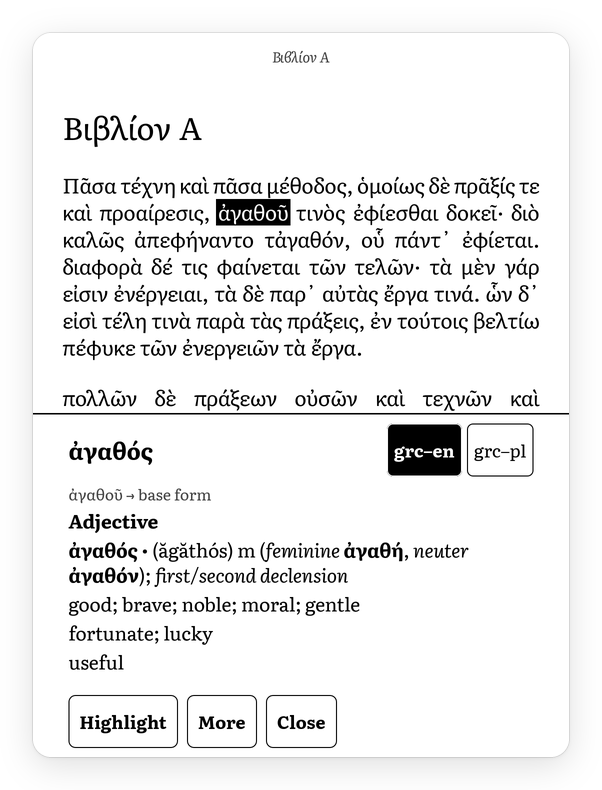
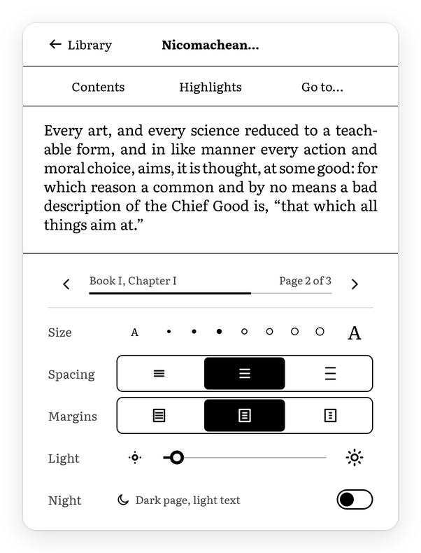
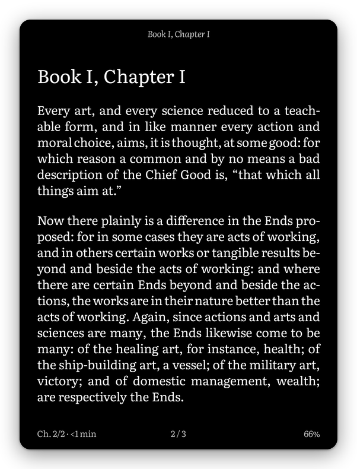

A new interface for the Kindle Paperwhite 4
Aristotle replaces the library, reader and settings of a jailbroken Paperwhite 4. It is written in Rust with its own e-ink toolkit and lays out books with Plato's document engine. The reader has no network code.
This is alpha software for one device, the Paperwhite 4 (2018) on firmware 5.13.x. The stock system stays installed and comes back when you quit. The interface is in English and Polish.

The library. With JavaScript on, you can tap this screen.
Frames are screenshots of a Kindle Paperwhite 4 running Aristotle. The book is in the public domain.
What it does
Each action ends in a single panel update that shows its final state.
-
Page turns
One full-screen update with the stock reader's waveform, so pages do not ghost. The next page is rendered in advance, and a turn takes 0.44 s from release. The stock reader takes 0.57 s.
-
Night mode
White on black on all screens. Switching takes one flash.
-
Dictionaries
Hold a word to look it up in StarDict dictionaries on the Kindle. Greek lookups ignore accents and breathings, and inflected Greek, Latin and Polish words lead to their dictionary form.
-
Footnotes and highlights
Footnotes open in a popup. Highlights are saved to
My Clippings.txtin the stock format, which existing tools read, and to a Markdown file per book. -
Folders and series
The library shows
documents/with your folders as they are, the current book on top and series in order. It picks up reading positions from the stock reader and KOReader. -
Typography
Literata, Knuth–Plass line breaking, and hyphenation for Polish, English, Ancient Greek and Latin. Aristotle reads EPUB, DRM-free MOBI, PDF and TXT.



Why a Paperwhite 4
Older Kindles still work, but their screens and batteries outlast the software Amazon ships for them. Aristotle gives a Paperwhite 4 a smaller interface that turns pages faster. It has no store, account or telemetry, and you copy books over USB.
| What | Stock | Aristotle |
|---|---|---|
| Memory used by the interface | about 200 MB | 14.5 MB |
| Page turn, from release | 0.57 s | 0.44 s |
| Opening a book | 0.8 s | 0.56 s |
Times come from the panel driver's log, with the same injected touches on both interfaces. Method and all measurements.
Try it
You build Aristotle on a Linux computer and copy it over the USB cable. The Kindle needs a jailbreak, KUAL, MRPI and KOReader.
Changing a Kindle's software can brick it. No recovery method has been verified for the Paperwhite 4, which is secure-boot locked. Try Aristotle only on a device you can afford to lose. It reads DRM-free books only.